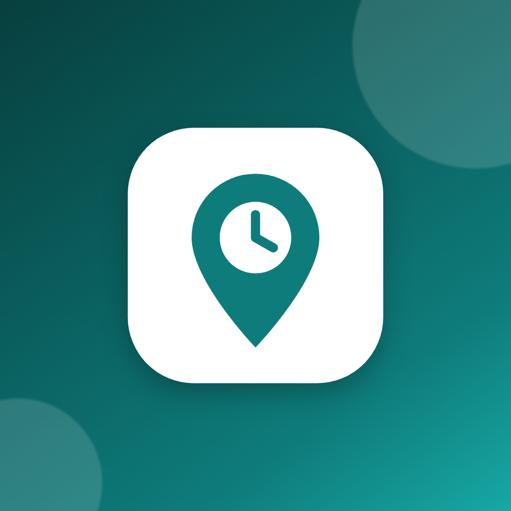
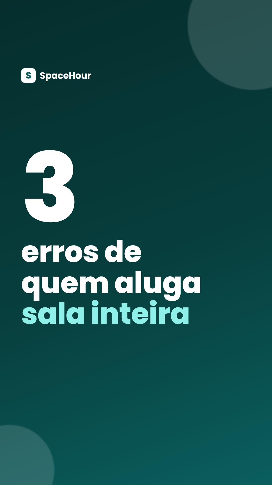
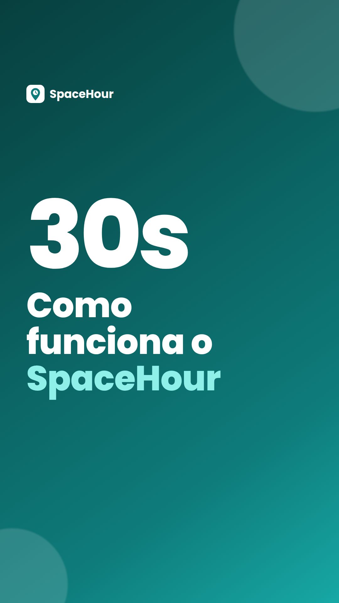
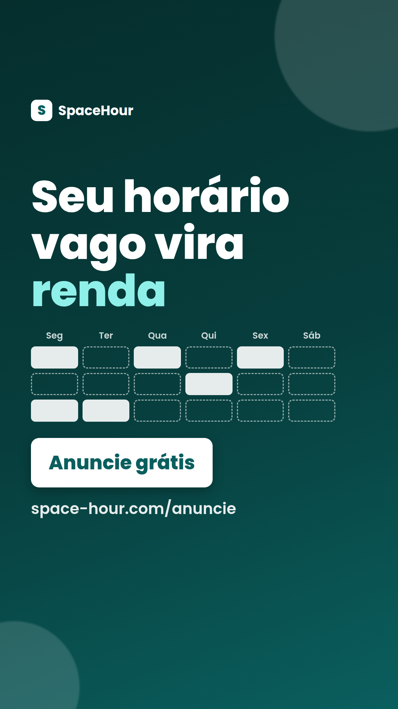

Kit de implementação · TikTok
O que é o SpaceHour: um site (space-hour.com) para alugar por hora espaços profissionais prontos: consultórios odontológicos e médicos, salas de psicologia, fisioterapia e estética, salas de aula, auditórios e salas de reunião.
Quem tem espaço ocioso (o anfitrião) anuncia grátis, sem mensalidade, e paga 5% por reserva paga, mais a tarifa do Mercado Pago.
Quem precisa de sala (o profissional) se cadastra grátis e paga só as horas que usar. Estamos começando por Maringá-PR.
Objetivo do TikTok: fazer o SpaceHour ser conhecido em Maringá com vídeos curtos gravados no celular e levar pessoas ao site para se cadastrar. Prioridade nas primeiras semanas: anfitriões (sem espaços anunciados, o profissional não encontra nada para reservar).
A quem pedir ajuda: Robson Ravel de Oliveira, responsável pelo SpaceHour. E-mail: support@space-hour.com.
Importante: não existe promoção, desconto, cupom nem taxa zero para anfitriões. Nunca prometa nada disso em vídeo, legenda, comentário ou mensagem.
Marque cada item quando estiver pronto. As marcações ficam salvas neste navegador.
O perfil é um ativo da empresa. Ele nunca pode ficar preso a uma conta pessoal. Os nomes dos menus mudam com frequência no app; quando um caminho abaixo não bater exatamente, procure pela palavra indicada entre aspas.
support@space-hour.com (ou outro e-mail da empresa que o Robson indicar). Nunca use e-mail pessoal.Por que conta comercial: ela libera estatísticas, e-mail de contato, link de site na bio, mensagem automática e integração com anúncios. Em troca, só é permitido usar músicas da Biblioteca de Músicas Comerciais (Commercial Music Library). Músicas comuns em alta não podem ser usadas por empresa.
O app do TikTok não tem "vários administradores" no perfil. O acesso compartilhado é feito pelo TikTok Business Center, que também é onde ficam os anúncios e o pixel.
business.tiktok.com e entre com a mesma conta da empresa.Fuso horário e moeda da conta de anúncios normalmente não podem ser alterados depois. Confira antes de salvar.
Perfil → Editar perfil. Preencha cada campo abaixo.
SpaceHour
Tente nesta ordem e use o primeiro que estiver livre (só letras, números, ponto e sublinhado):
spacehour spacehour.br spacehourbr spacehour_oficial spacehour.maringa
Avise o Robson de qual @ ficou, para ele usar o mesmo nas outras redes.
Ao virar conta comercial, o TikTok mostra uma lista. Escolha a mais próxima de "Serviços profissionais" ou "Serviços empresariais". Se houver "Imóveis/Aluguel", também serve. A lista muda com o tempo; o que importa é não escolher "Saúde", porque o SpaceHour aluga espaço e não presta atendimento de saúde.
Consultórios e salas por hora em Maringá. Anuncie grátis seu horário vago.
Espaços profissionais por hora em Maringá. Anuncie grátis ou reserve.
https://space-hour.com/conheca?utm_source=tiktok&utm_medium=bio&utm_campaign=lanc-geral
space-hour.com/conheca. Não é preciso criar página de links (tipo Linktree): o link vai direto para a página do SpaceHour.Editar perfil → E-mail (ou Business Suite → "Informações de contato"): support@space-hour.com. Isso cria o botão de e-mail no perfil. Não coloque telefone pessoal.
O TikTok não exibe endereço no perfil na maioria das contas. Se o Business Suite mostrar um campo de "Endereço comercial", use o endereço da empresa: Av. XV de Novembro, 255, Sobreloja, Maringá/PR, CEP 87013-230. Horário de atendimento: segunda a sexta, horário comercial (confirme com o Robson). Lembre que os espaços anunciados ficam em endereços dos anfitriões, que só são liberados após a reserva confirmada.

cards/tiktok/perfil.png · 1080×1080
Editar perfil → Alterar foto → escolha este arquivo. O TikTok recorta em círculo; o logo já está centralizado.
O TikTok não tem imagem de capa de perfil. As "capas" deste kit são as capas dos vídeos (seção 5).
As seis capas abaixo (1080×1920) são a primeira imagem de cada vídeo. Para salvar no celular: toque e segure a imagem → Salvar imagem. No computador: clique com o botão direito → Salvar imagem como. Os arquivos também estão no GitHub, em espacos/docs/marketing/cards/tiktok/.
Como usar a capa: na tela de publicação, toque em "Editar capa" / "Selecionar capa". Se aparecer a opção de carregar imagem da galeria, escolha o PNG. Se não aparecer, coloque o PNG como o primeiro segundo do vídeo (no editor do TikTok ou no CapCut) e selecione esse quadro como capa.
Links na legenda: no TikTok, link escrito na legenda ou em comentário não vira clicável. Por isso a legenda sempre manda para o link do perfil. O "link UTM do vídeo" abaixo serve para quando você compartilhar o vídeo fora do TikTok (WhatsApp, e-mail).
cards/tiktok/capa-01.png · Roteiro V1
Faça a conta: aluguel + condomínio + luz, dividido pelas horas em que a sala fica aberta. Cada hora vazia custa esse valor. 🧮 No SpaceHour você aluga esses horários por hora para profissionais com registro verificado. Anunciar é grátis, sem mensalidade. Link no perfil 👆 #maringa #consultorio #dentista #psicologia #fisioterapia #consultoriocompartilhado #spacehour
https://space-hour.com/anuncie?utm_source=tiktok&utm_medium=post&utm_campaign=lanc-anfitrioes
cards/tiktok/capa-02.png · Roteiro V2
Consultório pronto, só pela hora que eu precisei. Sem contrato, sem fiador, sem condomínio. Pix ou cartão. O endereço completo é liberado quando a reserva é confirmada. Cadastro grátis: link no perfil 👆 #maringa #consultorioporhora #psicologa #dentista #fisioterapeuta #autonomo #spacehour
https://space-hour.com/profissionais?utm_source=tiktok&utm_medium=post&utm_campaign=lanc-profissionais

cards/tiktok/capa-03.png · Roteiro V3
Atende poucas vezes por semana e paga aluguel cheio? Veja os 3 erros mais comuns e uma alternativa: alugar por hora, só quando tiver atendimento. Link no perfil 👆 #consultorio #psicologia #nutricionista #fisioterapia #empreendedorismo #maringa #spacehour
https://space-hour.com/profissionais?utm_source=tiktok&utm_medium=post&utm_campaign=lanc-profissionais
cards/tiktok/capa-04.png · Roteiro V4
Acabou de se formar e ainda não tem agenda cheia? Comece reservando consultório por hora, avulso ou toda semana no mesmo horário. Cadastro grátis, com registro profissional verificado. Link no perfil 👆 #recemformado #odontologia #psicologia #fisioterapia #primeiroconsultorio #maringa #spacehour
https://space-hour.com/profissionais?utm_source=tiktok&utm_medium=post&utm_campaign=lanc-profissionais

cards/tiktok/capa-05.png · Roteiro V5
Quem tem sala anuncia grátis e define preço, horários e regras. Quem precisa de sala reserva por hora e paga com Pix, cartão ou boleto. Simples assim. Conheça: link no perfil 👆 #spacehour #maringa #consultorio #salaporhora #coworking #empreendedorismo
https://space-hour.com/conheca?utm_source=tiktok&utm_medium=post&utm_campaign=lanc-geral

cards/tiktok/capa-06.png · Roteiro V6
Seu consultório fica parado em alguns horários? Anuncie esses horários no SpaceHour. Você define preço e regras, aprova cada pedido (ou deixa a reserva instantânea) e recebe direto na sua conta Mercado Pago. Sem mensalidade: 5% por reserva paga + tarifa do Mercado Pago. Link no perfil 👆 #maringa #dentista #clinica #consultorio #rendaextra #spacehour
https://space-hour.com/anuncie?utm_source=tiktok&utm_medium=post&utm_campaign=lanc-anfitrioes
Os vídeos V7 a V12 não têm capa pronta: use como capa um quadro do vídeo com o texto do gancho na tela.
Ritmo (sugestão inicial): 4 a 5 vídeos por semana, de preferência entre 11h e 13h ou entre 18h e 21h. Depois de 2 semanas, use o horário que aparecer em Estatísticas → Seguidores (no TikTok Studio / Business Suite). Grave em lote: 1 tarde por semana rende 4 a 5 vídeos. Nos dias sem post, responda comentários e mensagens.
| Dia | Formato | Vídeo / capa | Legenda resumida |
|---|---|---|---|
| 1 | Vídeo 30 s | V5 · capa-05 | Como funciona em 30 s. Fixar no perfil. |
| 2 | Vídeo 25 s | V1 · capa-01 | Quanto custa um consultório vazio? Faça a conta. |
| 3 | Vídeo 20 s | V6 · capa-06 | Seu horário vago vira renda. Anuncie grátis. |
| 4 | Sem post | — | Responder comentários e mensagens. |
| 5 | Vídeo 40 s | V7 | Um dia com o SpaceHour (anfitrião). |
| 6 | Vídeo 15 s | V9 | Você dividiria seu consultório por hora? (pergunta) |
| 7 | Sem post | — | Gravar o lote da semana 2. |
| 8 | Vídeo 30 s | V2 · capa-02 | Aluguei um consultório por 1 hora. Ligar Spark Ads (seção 8). |
| 9 | Vídeo 35 s | V10 | E se o profissional estragar algo? Caução e avaliações. |
| 10 | Vídeo resposta | V12 | Responder a um comentário real com vídeo. |
| 11 | Sem post | — | Responder comentários e mensagens. |
| 12 | Vídeo 40 s | V3 · capa-03 | 3 erros de quem aluga sala inteira. |
| 13 | Vídeo 20 s | V11 | POV: segunda de manhã, sala vazia. |
| 14 | Sem post | — | Gravar o lote da semana 3. Relatório semanal. |
| 15 | Vídeo 35 s | V4 · capa-04 | Recém-formado: comece sem gastar com sala. |
| 16 | Vídeo 40 s | V8 | Um dia com o SpaceHour (profissional). |
| 17 | Vídeo 25 s | V1 (versão 2) | Mesmo tema, outro gancho e outro espaço. |
| 18 | Sem post | — | Responder comentários e mensagens. |
| 19 | Vídeo 20 s | V13 | Tipos de espaço em 20 s. |
| 20 | Vídeo resposta | V12 | Responder dúvida de preço vinda de comentário. |
| 21 | Sem post | — | Gravar o lote da semana 4. Relatório semanal. |
| 22 | Vídeo 20 s | V6 (versão 2) | Horário vago vira renda, gravado em outro espaço. |
| 23 | Vídeo 30 s | V5 (versão 2) | Como funciona, versão do profissional. |
| 24 | Vídeo 35 s | V10 (versão 2) | Segurança: registro verificado e endereço após reserva. |
| 25 | Sem post | — | Responder comentários e mensagens. |
| 26 | Vídeo 40 s | V7 (outro anfitrião) | Um dia com o SpaceHour, com anfitrião real (com autorização). |
| 27 | Vídeo 15 s | V9 (versão 2) | Pergunta: qual espaço falta em Maringá? |
| 28 | Sem post | — | Relatório semanal. Ver quais vídeos viram anúncio. |
| 29 | Vídeo 30 s | V2 (versão 2) | Reservei por hora, outro tipo de sala. |
| 30 | Vídeo resposta | V12 | Responder a dúvida mais frequente do mês. |
Regras para todos os vídeos:
Comece os anúncios depois que o pixel estiver funcionando (seção 9) e houver pelo menos 5 vídeos orgânicos publicados (sugestão: dia 8).
business.tiktok.com, dentro do Business Center do SpaceHour → Ativos → Contas de anúncios → Criar.SpaceHour | Ads.Spark Ads usa os vídeos já postados no perfil como anúncio. Curtidas e comentários ficam no vídeo original e o perfil ganha seguidores.
| Item | Campanha 1: Anfitriões | Campanha 2: Profissionais |
|---|---|---|
| Nome | SpaceHour | Anfitrioes | Maringa | SpaceHour | Profissionais | Maringa |
| Objetivo | Conversão no site. No menu atual pode aparecer como "Conversões no site", "Geração de leads" (com destino Site) ou dentro de "Vendas" com destino Site. Escolha a opção que permite otimizar por evento do pixel. Não use formulário instantâneo: a pessoa precisa se cadastrar no site. | |
| Evento de otimização | CompleteRegistration ("Registro completo"). Se o Ads Manager avisar que há poucos eventos, use ClickButton nos primeiros 5 a 7 dias e troque depois. | |
| Local | Digite Maringá. Se a cidade não aparecer (o TikTok nem sempre oferece cidade ou raio no Brasil), escolha Paraná e deixe "Maringá" bem claro no vídeo e no texto. Raio de 30 km quando houver essa opção. | |
| Idade | 25 a 55+ | 18 a 55+ (inclui recém-formados) |
| Interesses (opcional) | Negócios e empreendedorismo; saúde e bem-estar; educação. Se o público ficar pequeno demais, deixe aberto (segmentação automática). | |
| Posicionamento | Somente TikTok (desmarque Pangle e outros apps). | |
| Orçamento diário (sugestão inicial) | R$ 40/dia | R$ 20/dia, só depois de 5 a 10 espaços publicados em Maringá |
| Criativos | Spark Ads de V1, V6, V10, V11 (capas 01 e 06) | Spark Ads de V2, V3, V4 (capas 02, 03, 04) |
| Botão (CTA) | "Cadastre-se" ou "Saiba mais" | "Cadastre-se" |
| URL de destino | link "TikTok Ads · anfitriões" abaixo | link "TikTok Ads · profissionais" abaixo |
O TikTok exige um orçamento mínimo diário por campanha e por grupo de anúncios. Se o painel disser que R$ 20 ou R$ 40 está abaixo do mínimo, use o mínimo exibido, ou junte os dois públicos numa campanha só até a verba crescer. Os valores acima são sugestões iniciais: depois de 7 dias, passe a verba para o anúncio com menor custo por cadastro.
Categoria especial: se o Ads Manager perguntar se o anúncio é de categoria especial (habitação, emprego, crédito), responda conforme a pergunta. Hoje essa exigência vale principalmente para os EUA e o Canadá; se aparecer para o Brasil, marque "Habitação/Imóveis" e aceite as restrições de idade e local.
https://space-hour.com/anuncie?utm_source=tiktok&utm_medium=paid&utm_campaign=lanc-anfitrioes
https://space-hour.com/profissionais?utm_source=tiktok&utm_medium=paid&utm_campaign=lanc-profissionais
Nos Spark Ads o texto do anúncio é a própria legenda do vídeo. Use os textos abaixo quando o anúncio permitir texto próprio (vídeo enviado direto ao Ads Manager).
Seu consultório fica vazio em alguns horários? Anuncie grátis no SpaceHour. Horário vago vira renda: alugue sua sala por hora em Maringá. Sem mensalidade. Você define preço, horários e regras. Receba direto no Mercado Pago.
Consultório pronto por hora em Maringá. Sem contrato, sem fiador. Atende poucas vezes por semana? Pague só as horas que usar. Reserve sala por hora com Pix ou cartão. Cadastro grátis.
Nome de exibição do anúncio (quando não for Spark Ads): SpaceHour. Imagem de perfil: cards/tiktok/perfil.png.
O site já tem o código do TikTok Pixel pronto. Falta só criar o pixel e entregar o ID ao Robson. Você não precisa mexer em código.
space-hour.com.SpaceHour Site.Robson, o TikTok Pixel está criado. Variável na Vercel (projeto spacehour → Settings → Environment Variables, ambiente Production, sem marcar "Sensitive"): VITE_TIKTOK_PIXEL_ID = [COLE AQUI O ID DO PIXEL] Depois é preciso fazer Redeploy. Me avise quando estiver no ar para eu testar.
| No site | Nome no TikTok | Quando acontece |
|---|---|---|
| PageView | Pageview (visualização de página) | Cada página aberta |
| Lead | ClickButton (clicar no botão) | Clique nos botões de cadastro das landings |
| CompleteRegistration | CompleteRegistration (registro completo) | Cadastro concluído |
O site manda o "Lead" como ClickButton. Ele não envia SubmitForm. Se o Gerenciador de Eventos pedir para mapear "Lead", use ClickButton.
LGPD: o pixel só carrega depois que a pessoa clica em Aceitar no aviso de cookies. Quem recusa não aparece no TikTok, mas o cadastro dela aparece em Admin → Campanha pela UTM. Por isso o TikTok sempre mostra menos conversões do que o site. É normal.
https://space-hour.com/anuncie?utm_source=tiktok&utm_medium=paid&utm_campaign=teste.| Uso | Link |
|---|---|
| Bio | https://space-hour.com/conheca?utm_source=tiktok&utm_medium=bio&utm_campaign=lanc-geral |
| Vídeo compartilhado fora (anfitrião) | https://space-hour.com/anuncie?utm_source=tiktok&utm_medium=post&utm_campaign=lanc-anfitrioes |
| Vídeo compartilhado fora (profissional) | https://space-hour.com/profissionais?utm_source=tiktok&utm_medium=post&utm_campaign=lanc-profissionais |
| Anúncio anfitriões | https://space-hour.com/anuncie?utm_source=tiktok&utm_medium=paid&utm_campaign=lanc-anfitrioes |
| Anúncio profissionais | https://space-hour.com/profissionais?utm_source=tiktok&utm_medium=paid&utm_campaign=lanc-profissionais |
Não invente outros valores de UTM sem combinar com o Robson: o relatório Admin → Campanha agrupa exatamente por esses nomes.
Oi! Aqui é o SpaceHour 👋 Alugamos consultórios e salas por hora em Maringá. Você tem um espaço para anunciar ou procura uma sala por hora? Responda aqui que a gente te ajuda. Site: space-hour.com/conheca
Que bom! Anunciar no SpaceHour é grátis e sem mensalidade. Você define preço, dias, horários e regras, aprova cada pedido (ou deixa a reserva instantânea) e recebe direto na sua conta Mercado Pago. Só há cobrança quando alguém aluga: 5% por reserva paga + tarifa do Mercado Pago. Para anunciar você vai precisar de uma conta Mercado Pago com chave Pix cadastrada. Comece pelo link do nosso perfil (space-hour.com/anuncie). Se quiser, eu te ajudo a cadastrar por chamada de vídeo. Qual o melhor horário?
Oi! No SpaceHour você reserva consultório ou sala pronta por hora, sem contrato, sem fiador e sem condomínio. Pode ser avulso ou toda semana no mesmo horário. O cadastro é grátis e pedimos o seu registro profissional (CRO, CRM, CRP, CREFITO etc.) para verificação. Comece pelo link do nosso perfil (space-hour.com/profissionais). Que tipo de espaço você procura e em que região de Maringá?
Quem anuncia define o preço da hora, então varia de espaço para espaço. Para quem anuncia: grátis, sem mensalidade; 5% por reserva paga + tarifa do Mercado Pago. Para quem aluga: o valor da hora + taxa de serviço de 15% e ISS sobre essa taxa. Pagamento por Pix, cartão ou boleto (boleto só para reservas com 3 dias ou mais de antecedência).
Boa pergunta! Quem aluga informa o registro profissional, que é verificado. O anfitrião pode exigir caução e avalista e pode aprovar cada pedido antes de confirmar. O pagamento é feito antes, pelo Mercado Pago, e os dois lados se avaliam depois. O endereço completo só é liberado depois da reserva confirmada.
Oi! Te mandei os detalhes por mensagem 😉 O link está no nosso perfil.
Crie uma planilha (Google Planilhas) chamada CRM SpaceHour - TikTok com estas colunas, nesta ordem:
Data Nome Contato Rede Tipo Cidade Status Próximo passo Data do próximo contato
Prefere um CRM? Use o RD Station CRM (plano grátis) ou o HubSpot CRM (grátis) com as mesmas colunas como campos. Se a conversa for para o WhatsApp Business, crie etiquetas com os mesmos status (novo, conversando, cadastrou...).
Cruzar com o site: toda sexta, peça ao Robson (ou abra, se tiver acesso) Admin → Contatos no site, filtre pelos cadastros da semana e atualize o status de quem cadastrou, publicou espaço ou reservou. A lista respeita quem pediu para não receber marketing: não mande mensagem de divulgação para essas pessoas.
A receita vem das reservas: o SpaceHour recebe 5% de cada reserva paga ao anfitrião e a taxa de serviço paga pelo profissional. O caminho é: vídeo → clique no link → cadastro → anúncio publicado (anfitrião) ou reserva (profissional).
Os programas do TikTok mudam de nome e de requisitos com frequência e variam por país. Os números abaixo são aproximados. Para conferir o que vale hoje: Perfil → ☰ → TikTok Studio → "Monetização" (ou "Ferramentas de criador"/"Ganhar dinheiro"). Se um programa não aparecer, ele não está disponível para a conta.
| Programa | Requisitos aproximados | Vale para o SpaceHour? |
|---|---|---|
| Creator Rewards Program (pagamento por vídeos com mais de 1 minuto) | 18+ anos, cerca de 10 mil seguidores, cerca de 100 mil visualizações em 30 dias, vídeos originais com mais de 1 minuto; disponível só em alguns países | Em geral não: costuma exigir conta pessoal (não comercial) e nossos vídeos são curtos. |
| Presentes em LIVE | 18+ anos; para fazer LIVE o TikTok costuma pedir cerca de 1 mil seguidores | Possível, mas não é foco. LIVE serve mais para tirar dúvidas de anfitriões. |
| Assinaturas (Subscriptions) | 18+ anos, cerca de 1 mil seguidores, histórico de LIVEs ou vídeos; depende de convite/país | Não recomendado para uma marca. |
| TikTok Shop · afiliados | 18+ anos e um mínimo de seguidores que muda por país (de algumas centenas a alguns milhares) | Não é o foco. Só se fizer sentido indicar produtos de equipamento, sempre marcado como publicidade. |
Resumo: para o SpaceHour, o dinheiro do TikTok vem dos cadastros e reservas (11.1) e das parcerias (11.3), não dos programas de criador.
Toda segunda-feira, anote numa aba "Métricas" da planilha:
| Métrica | Onde ver |
|---|---|
| Seguidores (total e novos na semana) | TikTok Studio / Business Suite → Estatísticas → Visão geral |
| Visualizações dos vídeos e alcance | Estatísticas → Conteúdo |
| Cliques no link do perfil | Estatísticas → Visão geral (procure "Cliques no site" ou "Cliques no link do perfil") |
| Cadastros com origem TikTok | Site → Admin → Campanha (utm_source = tiktok, por campanha) |
| Gasto em anúncios e CompleteRegistration | TikTok Ads Manager → Campanhas (período: últimos 7 dias) |
| Custo por cadastro | Gasto ÷ cadastros tiktok em Admin → Campanha |
| Leads no CRM por status | Sua planilha CRM |
TikTok · semana de [dd/mm] a [dd/mm] 1. Seguidores: [total] (+[novos]) · visualizações: [n] · cliques no link: [n] 2. Cadastros TikTok (Admin → Campanha): [anfitriões] anfitriões, [profissionais] profissionais · espaços publicados: [n] 3. Anúncios: gasto R$ [valor] · custo por cadastro R$ [valor] · melhor vídeo: [nome] 4. CRM: [n] novos contatos · [n] conversando · [n] cadastraram 5. Próxima semana: [o que vou mudar ou testar]
Dúvidas: Robson, support@space-hour.com.